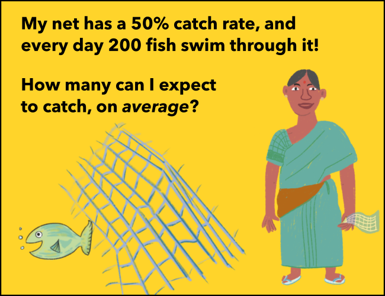
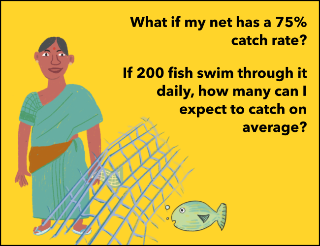
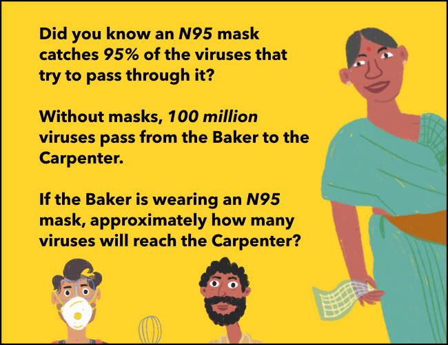
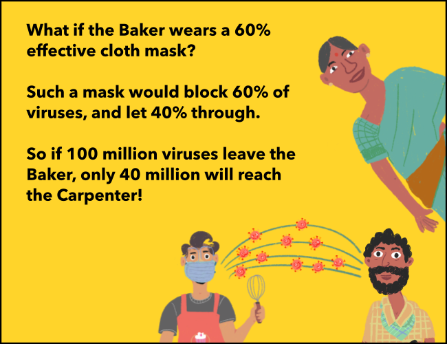
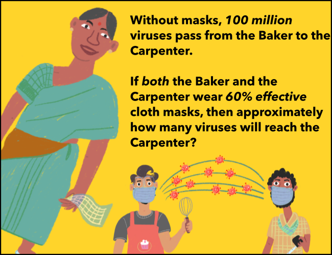
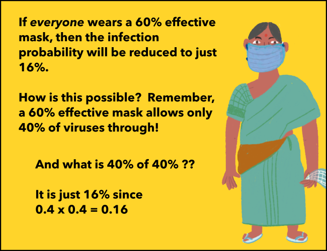
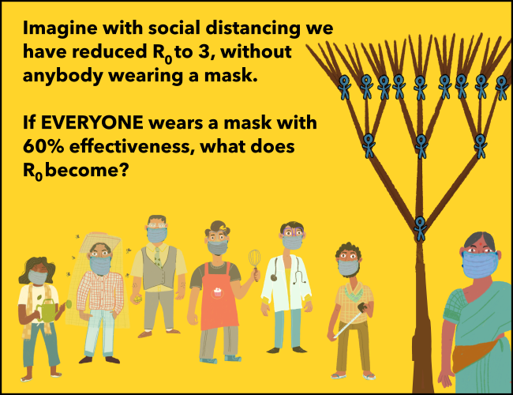

## Chapter 4: Fishing for Solutions Let's contact the Fisherwoman!
Exercise 1
25
50
100
150
I can count on catching more than that!
That's too low.
Yes! I can expect to catch around 100 fish in my net, out of the 200 my net comes in contact with.
That's too optimistic.
Exercise 2
50
100
150
200
No, that's much too low.
With my old 50% net that would be correct, but remember, this my new net, with a 75% catch rate!
Yes! 75% of 200 is 150, so I can expect to catch around that number of fish.
Nope, that is far too many!
Exercise 3
1 million
5 million
50 million
95 million
No, even an N95 mask is not that effective.
Yes! The mask will trap 95 million viruses, and only 5 million will make it through to the Carpenter.
No, an N95 is much better than that. A simple cloth mask on the other hand might let 50% of the viruses through.
Yikes! That's a lot of viruses getting through the mask. An N5 mask might trap only 5% of the viruses, but thankfully that mask doesn't exist!
Exercise 4
 16 million
36 million
40 million
60 million
Yes! 40 percent of 40 percent is 16 percent!
Nope, that's too many!
No, that's if only one person is wearing a mask.
No no, that's the total number of viruses that get trapped in the first mask. But how many make it through both masks?
Exercise 5
 0.16
0.48
1.35
1.80
No, that's the factor R-nought will be multiplied by.
Yes! The new R-nought will be 0.16 x 3 = 0.48.
Nope, we'll do better than that.
No - thankfully we will lower R-nought much more.